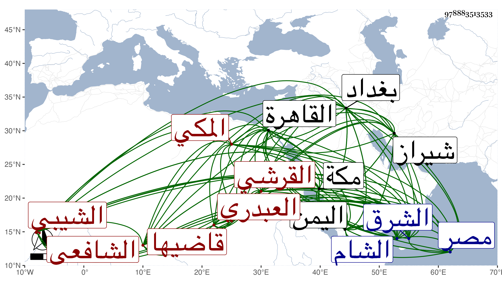

0902Sakhawi.DawLamic.ITO20230111-ara1.EIS1600.978883513533
Biography ID: 978883513533
39
محمد بن علي بن محمد بن أبي بكر بن محمد بن أحمد الجمال أبو المحاسن بن النور القرشي العبدري المكي قاضيها الشافعي الشيبي . ولد في رمضان سنة تسع وسبعين وسبعمائة بمكة ونشأ بها وسمع من القاضي علي النويري الاكتفا بفوت ومن الجمال الاميوطي بعض السيرة لابن سيد الناس ومن ابن صديق الصحيح وأجاز له النشاوري والصدر المناوي والتنوخي والبرهان بن فرحون والزين العراقي والعلم سليمان السقاء ومريم الأذرعية في آخرين وتفقه بالجمال بن ظهيرة وغيره ، واشتغل في فنون ونظم الشعر الحسن وتمهر في الأدب وكتب بخطه فيه الكثير وتوغل في الأعتناء به وصرف أوقاته له حتى كان لا يعرف إلا به وجمع فيه كتاب قلب القلب فيما لا يستحيل بالانعكاس في ثلاث مجلدات وتمثال الأمثال في مجلدين وطيب الحياة في مجلد ذيل به علي حياة الحيوان للدميري مع اختصار الأصل وغير ذلك كبديع الجمال بل شرح الحاوي الصغير وعمل اللطف في القضاء ، ودخل بلاد الشرق وبلاد اليمن وأقام بها مدة ورزق من ملكها الناصر الحظ الوافر ، وكان لطيف المحاضرة والمحادثة لا تمل مجالسته وولى سدانة الكعبة بعد قريبه محمد بن علي بن أبي راجح سنة سبع وعشرين فحمدت سيرته ثم قضاء مكة ونظر الحرم في وسط سنة ثلاثين لما دخل القاهرة عوضا عن أبي السعادات ابن ظهيرة وأبي البقاء بن الضياء فحمدت سيرته وما نهض المنفصل لاستمالة أحد على عوده سيما وقد اختلى صاحب الترجمة بالزيني عبد الباسط داخل البيت وتهدده بالتوجه فيه للدعاء عليه إن ساعده ، قال شيخنا في أنبائه بعدا ثنائه على سيرته : ولم يكن يعاب إلا بما يرمي به من تناول لبن الخشخاش وأن تصانيفه لطيفة ، وأورد من نظمه قوله في الجلال البلقيني لما أعيد بعد الهروي في سنة اثنتين وعشرين :
| عود الإمام لدى الأنام كعيدهم | بل عود لا عيد عاد مثاله |
| أجلى جلال الدين عنا غمة | زالت بعون الله جل جلاله |
وذكره التقي بن قاضي شهبة في طبقاته ووصفه بالقاضي العالم وخالف في مولده فأرخه سنة ثمان وسبعين وحجابة البيت ثمان وعشرين وقال أنه اشتغل بالعلم وأخذ عن مشايخ ذلك الوقت بمصر والشام وغيرهما وأثنى على سيرته في القضاء وان كتابه الأمثال صنفه للناصر صاحب اليمن وأنه صنف في آخر عمره في أحكام القضاء كتابا سماه اللطف في القضاء في مجاميع كثيرة منها تعليق على الحاوي وحوادث زمانه وأنه رحل إلى شيراز وبغداد . وقال غيره كان فاضلا دينا خيرا ساكنا عاقلا كريما متواضعا بارعا في الأدبيات تصانيفه دالة لفضله واتساع باله ، كل ذلك مع حسن الشكالة والسمت والشيبة النيرة وأبهة العلم وملازمة الطيلسان . وممن أثنى عليه المقريزي في عقوده وغيرها حيث قال . وكان مشكور السيرة صحبته في مجاورتي سنة أربع وثلاثين وهو قاض فنعم الرجل . مات في ليلة الجمعة ثامن عشري ربيع الأول على المعتمد ومن قال ربيع الآخر كابن شهبة والمقريزي ومن تبعهما فوهم سنة سبع وثلاثين عن نحو السبعين رحمه الله وأعيد أبو السعادات للقضاء والنظر . واستقر في مشيخة الحجبة قريبه علي بن أحمد بن علي بن محمد بن علي العراقي الماضي .
